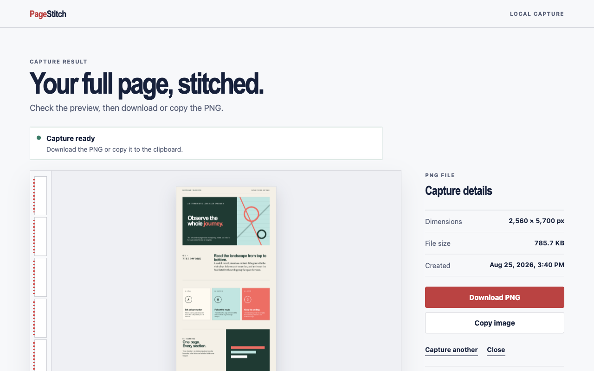

Complete capture
Below the fold belongs in the picture.
PageStitch captures pages taller—and wider—than the browser window, then joins the viewports into one image.
Chrome extension · local capture
PageStitch scrolls, captures, and joins an entire webpage into one clean PNG—privately, inside Chrome.

Built for the handoff
For bug reports, design reviews, research, receipts, and every moment when one complete image explains more than a stack of cropped screenshots.
Complete capture
PageStitch captures pages taller—and wider—than the browser window, then joins the viewports into one image.
Clean result
Inspect the complete image on a local result page, then download the PNG or copy it when browser policy permits.
Private by design
No account, cloud storage, analytics, advertising, tracking, or remote code. The capture never goes to us.
Three steps, one artifact
PageStitch handles the repetitive part. Keep the source tab active while the badge shows progress.
Read the capture guideChoose an ordinary HTTP or HTTPS page that extends beyond the visible window.
The extension measures the page, scrolls through it, captures each viewport, and restores your position.
Review the stitched result, download it, or copy it directly into the next part of your workflow.
The shortest possible data journey
PageStitch processes visual content, layout measurements, and the selected tab URL only to produce the screenshot you requested. Nothing is transmitted to the developer or a third party.
Clear boundaries
Protected pagesChrome settings, the Web Store, other extension pages, and non-HTTP(S) URLs cannot be captured.
Changing layoutsPages that animate, load forever, or change as they scroll may not stitch perfectly.
Very large pagesBrowser canvas limits apply to unusually tall or wide results.
Good to know
No. Capture and stitching happen locally in Chrome. PageStitch has no server, account system, analytics, or cloud storage.
PageStitch exports PNG only. It does not currently include PDF, JPEG, annotation, or editing tools.
Chrome captures the visible active tab. Switching tabs during capture would return the wrong pixels, so PageStitch stops safely instead.
Only activeTab, scripting, and offscreen: temporary page access after your click, a packaged capture helper, and a local hidden canvas for stitching.
Ready when the page is long
Install PageStitch, open a page, and capture it in one click.
Add to Chrome